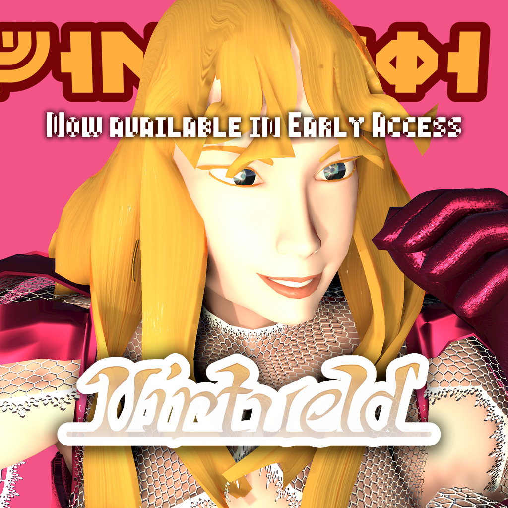
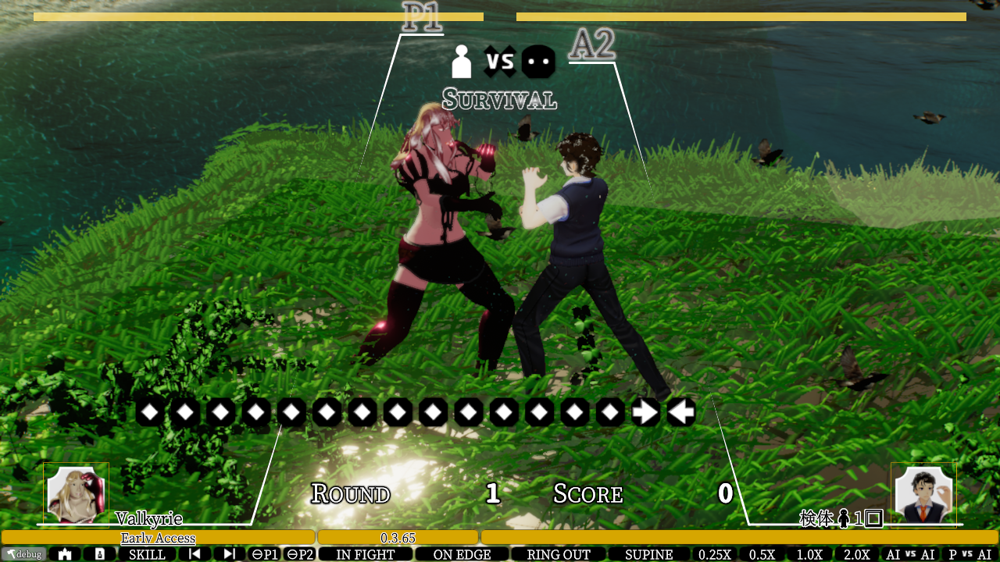

Windows 10用Virtueldのダウンロード☛

|  |  |
Windows 10用Virtueldのダウンロード☛
English |
📕User's Manual | 🎮Controls | ||
|---|---|---|---|---|
Japanese |
📕取扱説明書 | 🎮操作方法 | ✒更新履歴 | 🔨デバッグツール |
| Credits | ||||
| Topics | Experimental Topics | |||
| Project Site | 🎮Virtueld (XVRF) project home site | |||
Windows has installed Virtueld and XVRF URL protocol handler.
VRoid Hub. Note that is somewhat different ingame.VRoid Hub上で3DアニメーションするVRMキャラクターをプレビューできます。ゲーム内とは多少異なります。
| Protagonist of Virtueld | 🔗ᚡᛆᛚᚴᚤᚱᛄᛆ (Valkyrie) |
|---|---|
My simple experimental ♂ on VRoid Studio | 🔗Virtueld Specimen Male 1 |
My simple experimental ♀ on VRoid Studio | 🔗Victorine |
| As a reference ♀ by VRoidプロジェクト | 🔗ヴィータ / Vita |
| As a reference ♂ by VRoidプロジェクト | 🔗桜田 史利矢 (Fumiriya Sakurada) |
| You can find🔎 and heart♡ to play ingame🎮 your favorite VRM character on | 🔗VRoid Hub |
| You can also create your VRM character by | 🔗VRoid Studio |
| Become a Patron! | xelfia.itch.io |